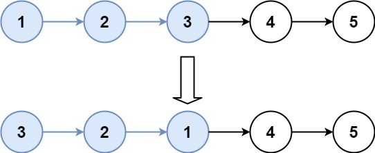

25. K 个一组翻转链表
哨兵 + 迭代：每组先探测后面还有没有 k 个结点，够就切下、反转、接回，不够就原样保留。
思路
- 哨兵
dummy接在表头前；tail始终指向「上一组反转后的尾结点」，一开始就是dummy。 - 先探测：从
tail往后数k步，得到本组最后一个结点last；数到null说明不够k个，直接结束，剩下的原样保留。 - 切下本组（
last.next = null），反转后接到tail后面；不先切断，反转会一路跑进后面的结点。 - 旧组头
first反转后成了组尾：first.next = after（after是下一组的头）接上后面，再tail = first进入下一组。
图解
最优解
1class Solution {2 public ListNode reverseKGroup(ListNode head, int k) {3 ListNode dummy = new ListNode(0, head);4 // tail：上一组反转后的尾结点，一开始是哨兵5 ListNode tail = dummy;6 while (true) {7 // 先探测：从 tail 往后数 k 个，数不满就结束8 ListNode last = tail;9 for (int i = 0; i < k && last != null; i++) last = last.next;10 if (last == null) break;11 ListNode first = tail.next, after = last.next;12 // 切下本组，反转后接回13 last.next = null;14 tail.next = reverse(first);15 // 旧组头成了新组尾，接上下一组16 first.next = after;17 tail = first;18 }19 return dummy.next;20 }21 22 private ListNode reverse(ListNode head) {23 ListNode prev = null;24 while (head != null) {25 ListNode next = head.next;26 head.next = prev;27 prev = head;28 head = next;29 }30 return prev;31 }32}题目
给你链表的头节点 head ，每 k 个节点一组进行翻转，请你返回修改后的链表。
k 是一个正整数，它的值小于或等于链表的长度。如果节点总数不是 k 的整数倍，那么请将最后剩余的节点保持原有顺序。
你不能只是单纯的改变节点内部的值，而是需要实际进行节点交换。
示例 1：

输入：head = [1,2,3,4,5], k = 2 输出：[2,1,4,3,5]
示例 2：

输入：head = [1,2,3,4,5], k = 3 输出：[3,2,1,4,5]提示：
- 链表中的节点数目为
n 1 <= k <= n <= 50000 <= Node.val <= 1000
进阶：你可以设计一个只用 O(1) 额外内存空间的算法解决此问题吗？
题面取自力扣当前版本。
数据快照 2026-11-04。题面版权归力扣所有，本站点仅供本人学习使用，请勿对外发布。